Located in the Occitanie region, the Pont du Gard is the major element of a 50.02 km aqueduct built in the middle of the 1st century to supply the city of Nîmes, the ancient Roman colony of Nemausus, from the Eure source located near Uzès. A three-storey aqueduct bridge rising to nearly 48.77 m, it enabled the water conduit to cross the Gardon River. This triple bridge, whose longest floor, at the very top of the edifice, measured 360 m, is a feat and a masterpiece of Roman architectural technique, but also a work of art whose presence transfigures the landscape. Set in a natural site that enhances its imposing appearance and its lines of force, the Pont du Gard rests on a rocky base, notched by the river spanned by its major arch. The gentle and symmetrical tapering of the arches, the span of the lower arches and the regularity of the upper gallery give it an extraordinarily airy appearance for a work of such magnitude.
Read more 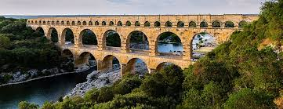 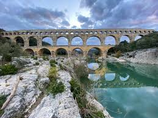 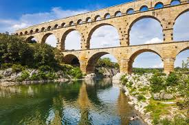 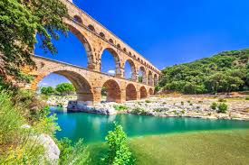Perched on a rocky islet in the midst of vast sandbanks exposed to powerful tides, at the limit between Normandy and Brittany, stands “Wonder of the West”, a Gothic-style Benedictine abbey dedicated to the Archangel St Michel, and the village that grew up in the shadow of its walls. Built between the 11th and 16th centuries, the abbey is a technical and artistic tour de force, having had to adapt to the problems posed by this unique natural site. Thus, the practical and aesthetic solutions inscribed in the stones of the edifice are henceforth inseparable from its natural environment. This Benedictine abbey, founded in 966, was erected on a sanctuary dedicated to the Archangel Michel since 708 and conserves some vestiges of the Romananesque period. The older part of the present abbey, the small pre-Romanesque church with a double nave, Notre-Dame-sous-terre, in granite masonry and flat bricks, dates back undoubtedly to the 10th century. The contribution of the Romanesque period is still visible in the nave of the abbey church, whose crossing is supported by the rock summit, and in a group of conventual staggered buildings (the chaplaincy or gallery of Aquilon, the covered gallery of the monks of which the vault, constructed after 1103, would be one of the earliest examples of ribbed vaulting). But it is the masters of the Gothic period who, benefiting as best they could from the restricted area, invented the high walls, the soaring masses, the open volumes, the airy pinacles and the sharp silhouette of the rock.
Read more 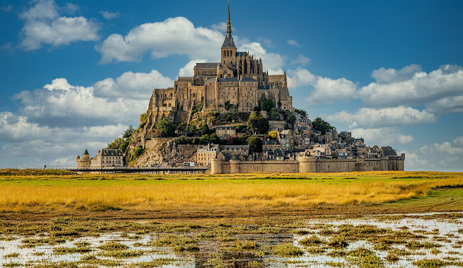 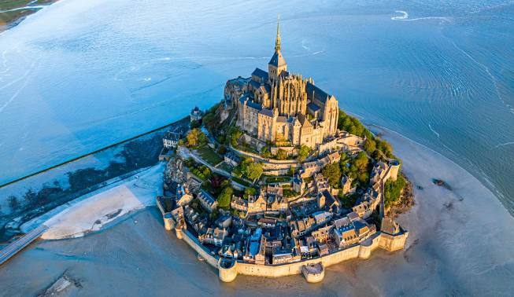 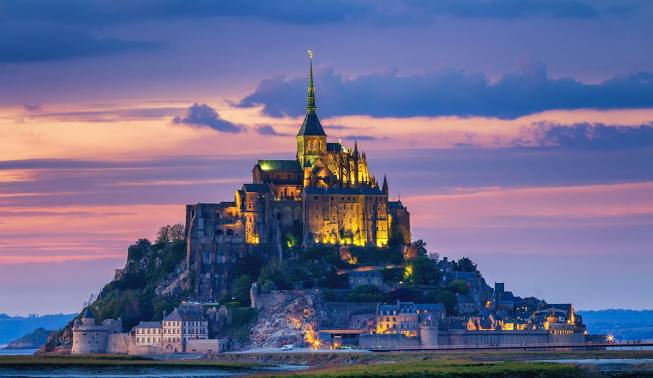 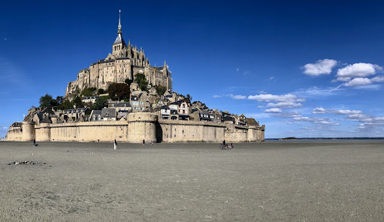Located in the Occitan region, the Canal du Midi has 360 navigable kilometers and 328 structures (locks, aqueducts, bridges, spillways, tunnels, etc.). This civil engineering achievement, amongst the most extraordinary of the modern era, built between 1667 and 1694, paved the way for the Industrial Revolution. The concern for architectural aesthetics and man-made landscapes that inspired its designer, Pierre-Paul Riquet, made it not only a technical feat, but also a work of art. The Canal du Midi is the initial part of the Deux-Mers Canal project which aimed to link the Mediterranean and the Atlantic by connecting several sections of waterways. It is the living testimony of the art and creativity of the engineers of the time of Louis XIV who triumphed over the difficult conditions of geography and hydrography to realize the immemorial dream of the "junction of the seas". Its wide-ranging technical and cultural impact inaugurated and influenced the modern era of creating navigable networks across the industrialized countries of Europe and North America. The Canal du Midi has five elements, namely the main section that connects Toulouse (Haute-Garonne) to Étang de Thau at Marseillan along the Mediterranean coast (Hérault) over a length of 240 km; the 36.6 km section between Moussan and Port-la-Nouvelle (Aude) which incorporates part of the former Canal de la Robine; the two branches that merge and flow into the canal at Naurouze (Aude) discharging the waters of the Montagne Noire; the Saint-Pierre Canal (1.6 km) which connects the main section of the Canal with the Garonne in Toulouse; the short section (0.5 km) that joins the Hérault to the round lock at Agde. One of the most remarkable features is the Saint-Ferréol dam on the Laudot River in the Montagne Noire region. It is the largest work of the entire canal and the most important civil engineering site of the time.
Read more 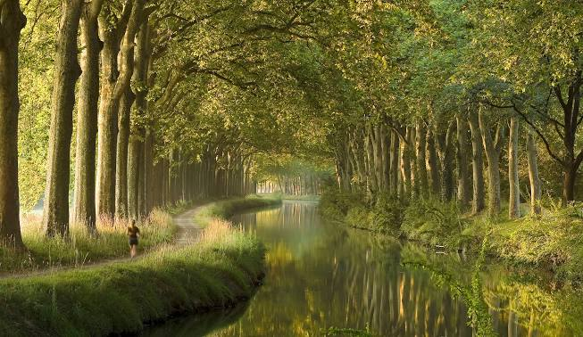 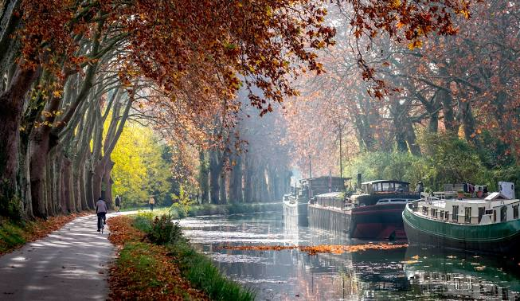 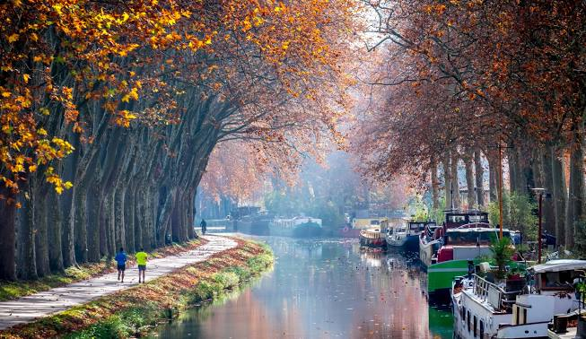 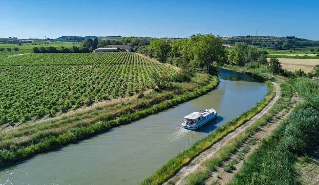